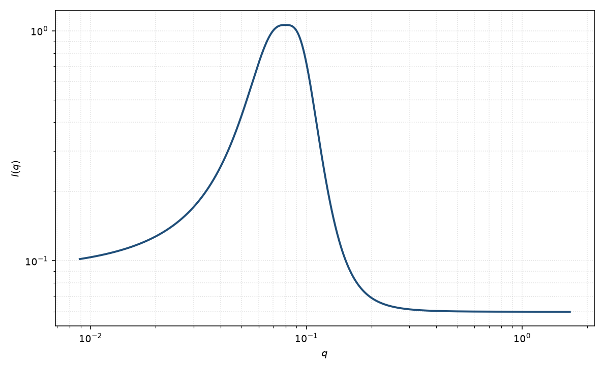

宽峰
broad peak
适用场景
液体、微乳、聚电解质或凝胶常出现又宽又不一定对称的相关峰。宽峰经验式用 $q_0$、关联长度 $\xi$ 与指数 $m$ 抓住峰位和宽度，不引入晶格。
峰变得又尖又有高阶时，应改用层状堆叠。双连续微乳且可用 $q^2,q^4$ 展开时，Teubner–Strey 更有物理内容。
物理图像
把 Ornstein–Zernike 的极点从 $q=0$ 移到 $q_0$，再把分母指数改成 $m$，就得到常用宽峰。$\xi$ 控制宽度，$m$ 控制尾的陡度。
这是经验相关峰，不是布拉格晶格。取向样品中 $q_0$ 可以只出现在特定方向。
示意图

核心公式
出发点
本式是经验相关峰：把 Ornstein–Zernike 的极点从 $q=0$ 移到 $q_0$，再把分母幂次从 $2$ 改成可调 $m$。它不来自晶格求和，也不导出 Teubner–Strey 那套 $d_{\mathrm{TS}}$ 与 $\xi$ 的约束关系。
推导
OZ 为 $I\propto 1/(1+\xi^2 q^2)$。液体峰需要有限周期，于是把 $q$ 换成 $\lvert q-q_0\rvert$；再让尾的陡度自由，把平方换成 $m$：
$$I(q)=\frac{A}{1+(\lvert q-q_0\rvert\xi)^m}+B.$$$q_0=0$、$m=2$ 精确回到洛伦兹。$\xi$ 使 $q\xi\sim 1$ 时离开峰值，$m$ 控制翼：$m=2$ 为洛伦兹尾，$m=4$ 更接近 DAB/Porod 陡度。特征间距仍可粗读 $2\pi/q_0$，但峰可以很宽，不必是布拉格。
低 $q$ 与渐近
峰在 $q_0$；$q\to 0$ 处 $I=A/(1+(q_0\xi)^m)+B$，一般不是极大。高 $q$ 渐近 $A/(\xi^m q^m)$。$q_0\to 0$ 时峰并入原点，本式变成关联长度模型。有高阶峰或 $q^4$ Landau 结构时应改用层状堆叠或 Teubner–Strey。
参数表
| 参数 | 符号 | 含义 | 单位 | 典型范围 |
|---|---|---|---|---|
| 峰位 | $q_0$ | 相关峰中心 | Å$^{-1}$ | 液体峰常见 $0.05$–$0.2$ Å$^{-1}$ |
| 关联长度 | $\xi$ | 控制峰宽 | Å | 10–500 Å |
| 指数 | $m$ | 尾的陡度 | 无量纲 | 通常 $2$–$4$ |
| 幅度 | $A$ | 峰高 | 与强度单位一致 | 与衬度、有序程度相关 |
| 标度 / 本底 | $\mathrm{scale}$, $B$ | 前置因子与常数本底 | 与强度单位一致 | 实验相关 |
拟合注意
取向：粉末平均把弧向信息丢掉。剪切后的各向异性峰应分方向拟合 $q_0$。
多分散的重复距离加宽峰，并与 $\xi$、$m$ 简并。磁性相关峰可以有不同的 $q_0$。
可辨识性：$q_0$、$\xi$、$m$、$B$ 四者相关。没有两侧翼的数据时，先固定 $m=2$ 或 $4$。不要把宽峰的 $q_0$ 解释成晶体点阵常数。
相近模型
- 洛伦兹峰 — $m=2$ 且峰较窄时的特例。
- Teubner–Strey — 微乳双连续相的 $a+cq^2+dq^4$ 展开。
- 关联长度 — 无峰位、$q_0=0$ 的经验关联。
参考文献
- Teubner, M.; Strey, R. Origin of the scattering peak in microemulsions. J. Chem. Phys. 1987, 87, 3195–3200. DOI: 10.1063/1.453006
- Guinier, A.; Fournet, G. Small-Angle Scattering of X-rays. Wiley: New York, 1955.